Projects
05 rows · click to expand
01
Fleet Operations Capstone
A 5-page Power BI dashboard covering revenue, fleet health, driver safety, route profit, and fuel cost
Power BI
+
What it answers
A transport company needs one place to see whether routes, vehicles, and drivers are actually making money — not just moving freight.
Pages built
- Executive Overview — revenue by month and top customers, delivery reliability
- Fleet Utilization & Performance — fuel efficiency by vehicle age, maintenance cost by make
- Driver & Safety Logistics — incident cost trend, claims by driver, on-time delivery leaders
- Route Profitability — most and least profitable lanes, revenue per mile
- Fuel Management — fuel spend vs. cost per mile, idle time by vehicle make
Findings
Across $298.62M in revenue and 85K trips, the fleet held a strong 65.18% profit margin — but on-time delivery sat at just 55.67%, with Charlotte → Portland as the standout profitable lane and Volvo trucks driving the most fleet idle time.
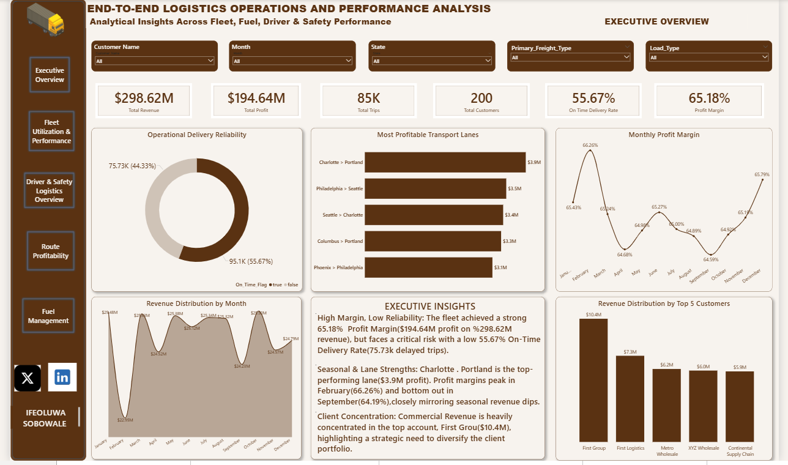
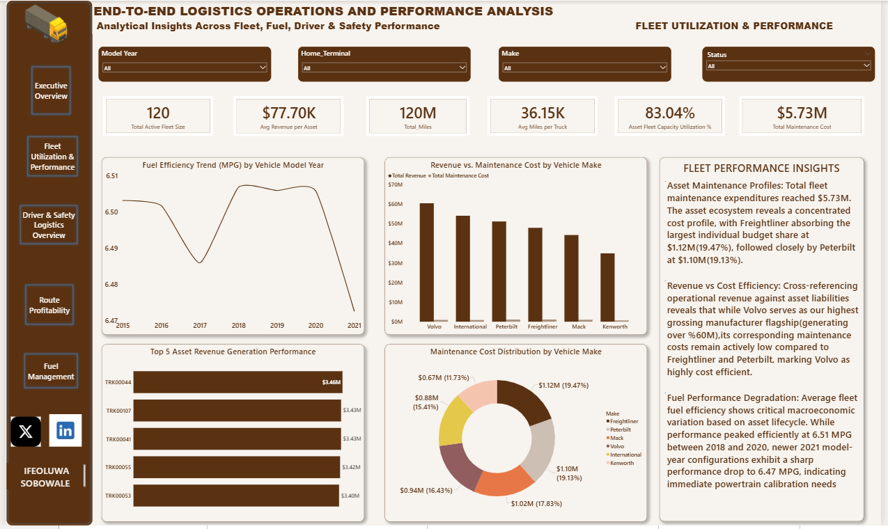
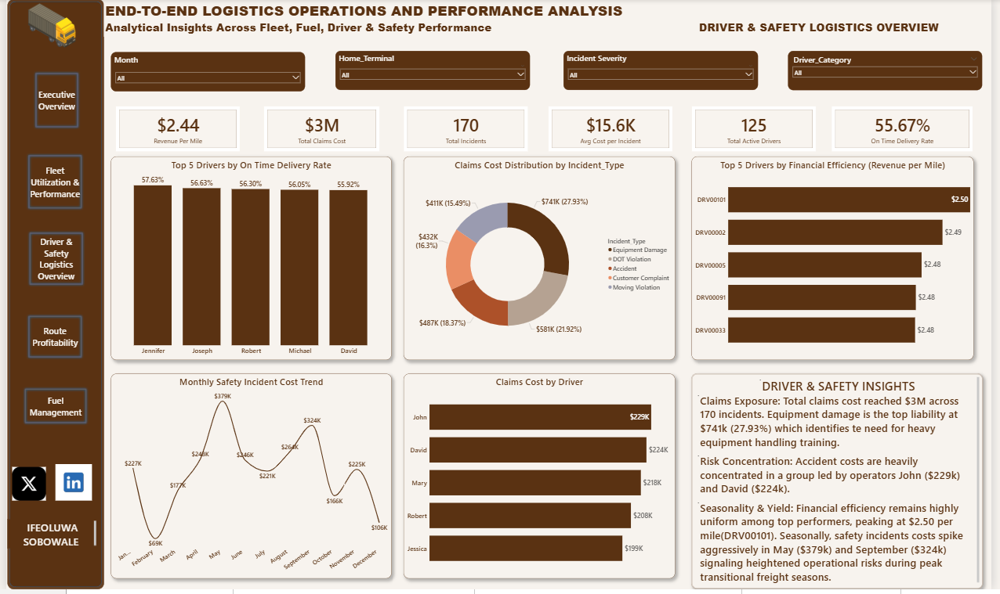
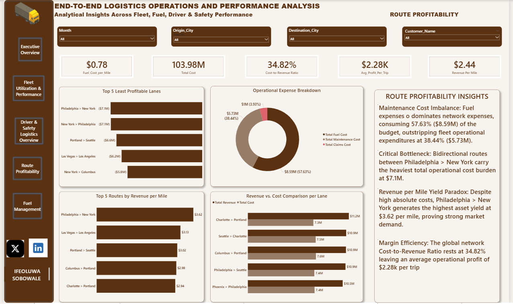
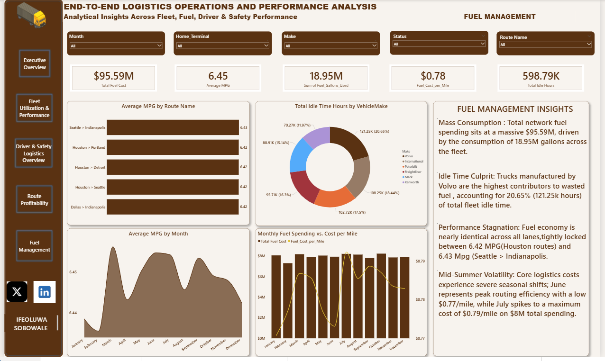
02
Retail Sales Performance Dashboard
Power BI dashboard tracking profit by brand, color, income level, and time
Power BI
+
What it answers
Which products, customer segments, and months actually drive profit — and where the business is losing ground.
- Profit by brand and by product color
- Yearly revenue trend and monthly customer volume
- Profit split by customer income level
Key insight
On $3M in revenue and $932K in profit across 250 customers, Apple led every brand by profit, white was the best-selling color, and medium income-level customers generated the largest profit share. Revenue peaked in 2023; February was consistently the weakest month.
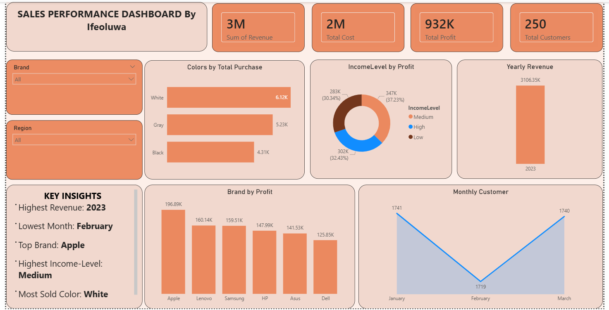
03
Excel Sales KPI Dashboard
Pivot-table dashboard built from raw transaction data, no Power BI
Excel
+
What it answers
Built from a 2,098-order dataset across 4 regions, 10 products, and 6 sales reps. The brief: calculate Revenue, COGS, Profit, and Customer KPIs from scratch, then visualize them.
- Most profitable product, by pivot table
- Top sales rep by revenue
- COGS by city
- Customer volume by month, to spot the weakest month
Findings
Laptops were the single most profitable product line (₦105.3M), Lagos carried the highest cost of goods sold of any region, and one sales rep outsold the rest of the team by a wide margin.
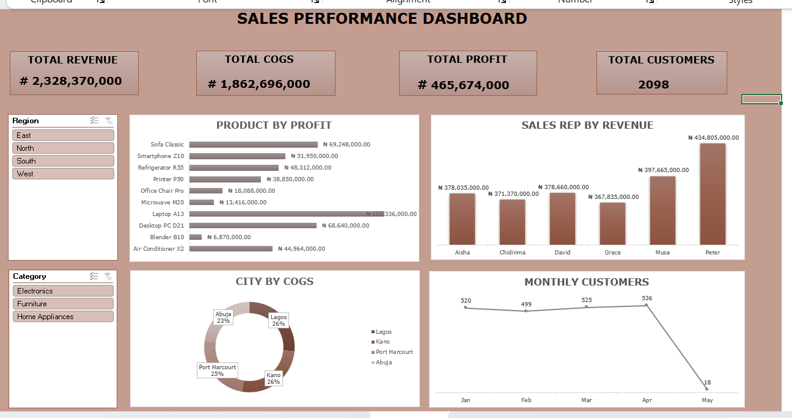
04
E-commerce Data Cleaning
Turned a messy 1,200-row order export into an analysis-ready dataset
Excel
+
What it answers
Raw transaction exports rarely arrive clean. This project takes 1,200 rows across 14 columns and fixes the issues that would otherwise break downstream reporting.
- Filled 309 missing coupon codes instead of dropping rows
- Verified zero duplicate order IDs
- Standardized text casing and trimmed whitespace across every category field
- Converted prices to a strict 2-decimal currency format
- Normalized every date to ISO 8601
Why it matters
None of the 1,200 records were lost, and every column was left in a state that won't silently break a filter, a VLOOKUP, or a pivot table later.
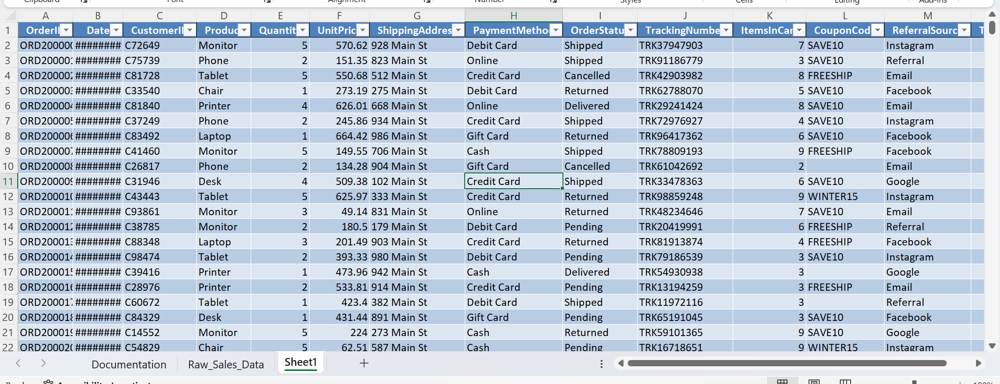
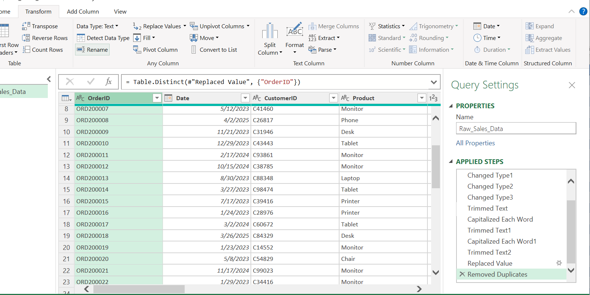
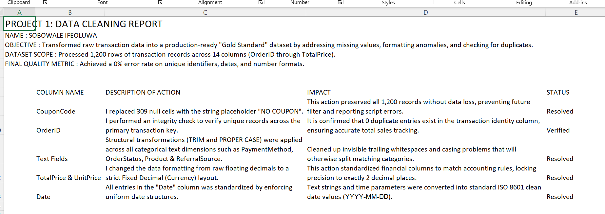
05
E-commerce Sales Analysis
Descriptive statistics and trend analysis on the cleaned order data
Excel
+
What it answers
Picks up where the cleaning project left off: what does this data actually say about the business?
- Mean vs. median order value, to check for outlier-driven skew
- Year-over-year revenue trend
- Revenue by product category and payment method
- Order status breakdown — delivered vs. cancelled vs. returned
Findings
Average order value ($1,054) sat well above the median ($824), pointing to a handful of high-value orders pulling the average up. More urgently: cancelled and returned orders combined (497) outnumbered successful deliveries (231) — a logistics or satisfaction problem worth flagging before a profitability project, not after.
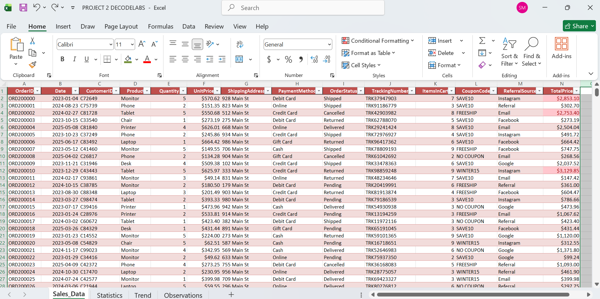
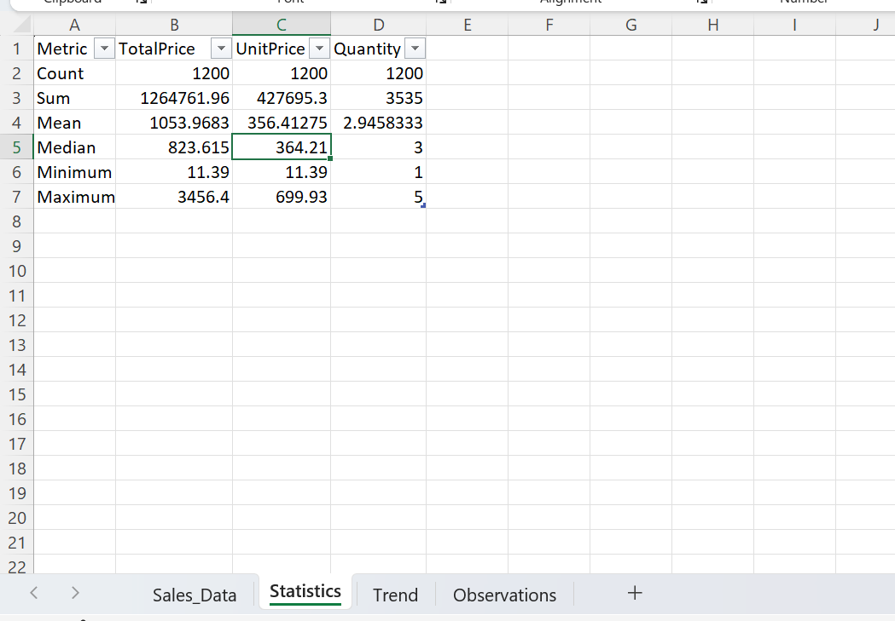
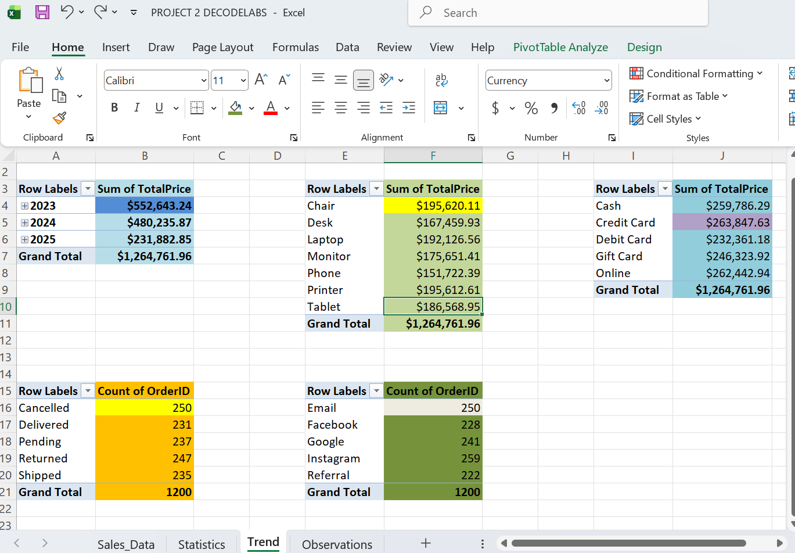
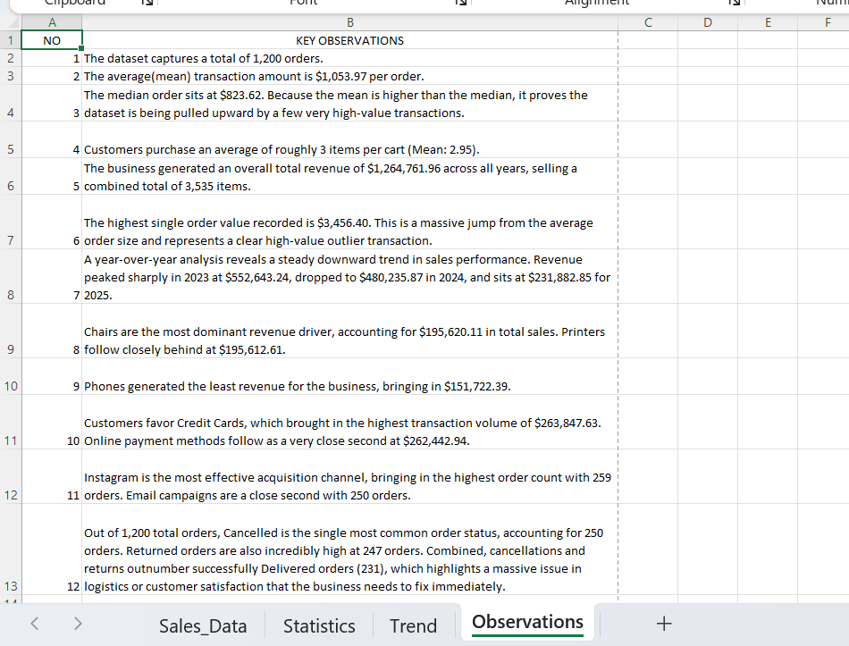
06
SQL Querying Project
Joins, window functions, and aggregation on a multi-table dataset
Building
+
Status
In progress. This slot is reserved on purpose — a portfolio that only shows finished work hides the fact that real analysis takes iteration.
Plan
Will cover multi-table joins, window functions, and a query-driven summary written the same way as the projects above: problem, approach, findings.
Skills
tools & methods- Excel — pivot tables, slicers, KPI dashboards
- Formula-driven (not hardcoded) models
- Data cleaning at scale — nulls, duplicates, formatting
- Power BI — multi-page reports, drill-through
- DAX measures and calculated columns
- Slicers, bookmarks, and KPI cards
- Data profiling & statistical analysis
- Data storytelling — written findings, not just charts
- Python — data analysis fundamentals
- SQL — in progress
About
backgroundData Analysis Intern at Decode Labs, and a graduate of TS Academy's Data Analysis Training (2026). B.Sc. Political Science, University of Lagos.
I spent 5 years in administrative roles at an educational institution — managing financial databases, auditing payment records, and keeping 100% data integrity across thousands of student records. That's where the analyst instinct started: data only matters if someone can trust it and act on it.
I now work mostly in Excel and Power BI, taking raw exports — sales transactions, fleet logs, e-commerce orders — and turning them into dashboards a non-analyst can read in under a minute.
Most of my projects follow the same shape: clean the data, calculate the real KPIs, build the visual, then write down what it means. That last step is the one a lot of dashboards skip, and it's the one stakeholders actually act on.
I'm currently extending that into SQL and Python, so I can work directly against a database instead of a static export.